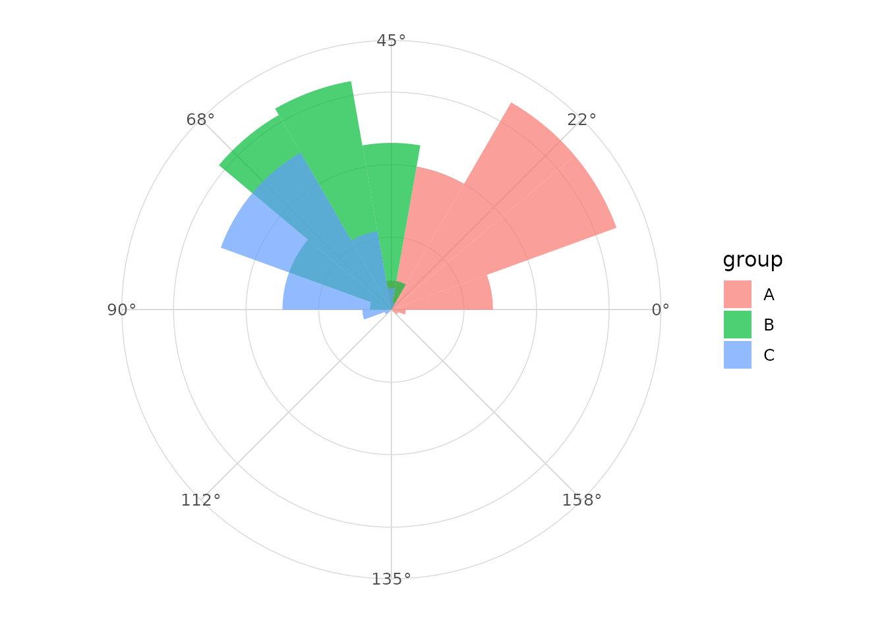
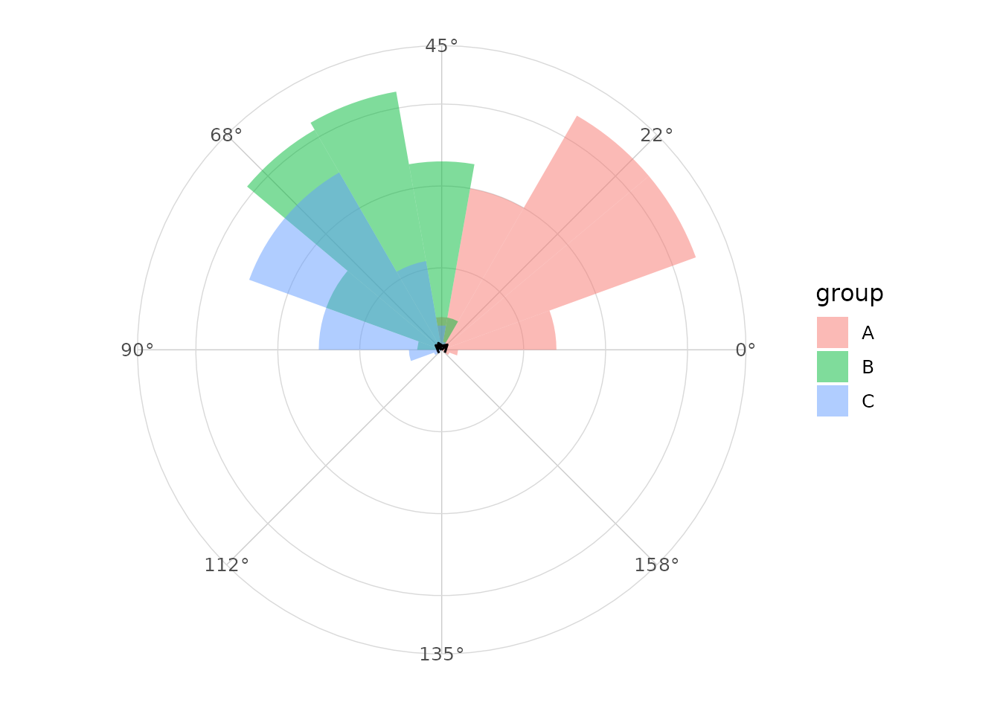
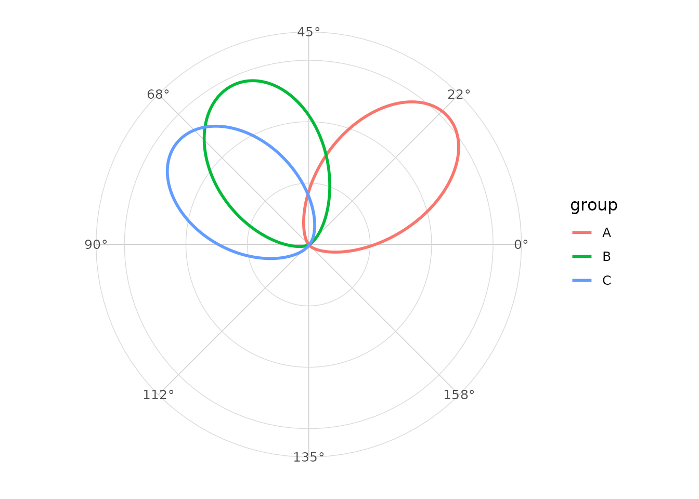

Directional versus axial
Directional observations have a head and tail. Axial observations
represent an orientation where angles separated by pi are
equivalent.
Examples
Fiber orientations, fault orientations and undirected line segments are common examples of axial data.
Doubling angles
The usual computational approach doubles angles, applies directional circular statistics, then halves the resulting mean direction.
library(ggplot2)
library(ggcircular)
circular_summary(axial_orientations, orientation, axial = TRUE)
#> # A tibble: 1 × 7
#> n mean R Rbar variance sd kappa
#> <int> <dbl> <dbl> <dbl> <dbl> <dbl> <dbl>
#> 1 300 0.865 206. 0.688 0.312 0.864 1.94Axial rose diagram
ggplot(axial_orientations, aes(x = orientation, fill = group)) +
geom_rose(bins = 18, axial = TRUE, alpha = 0.7) +
scale_x_circular_degrees(limits = c(0, pi)) +
coord_circular() +
theme_circular()
Axial mean
ggplot(axial_orientations, aes(x = orientation, fill = group)) +
geom_rose(bins = 18, axial = TRUE, alpha = 0.5) +
geom_mean_direction(axial = TRUE) +
scale_x_circular_degrees(limits = c(0, pi)) +
coord_circular() +
theme_circular()
Axial density
ggplot(axial_orientations, aes(x = orientation, colour = group)) +
geom_circular_density(axial = TRUE, linewidth = 1) +
scale_x_circular_degrees(limits = c(0, pi)) +
coord_circular() +
theme_circular()